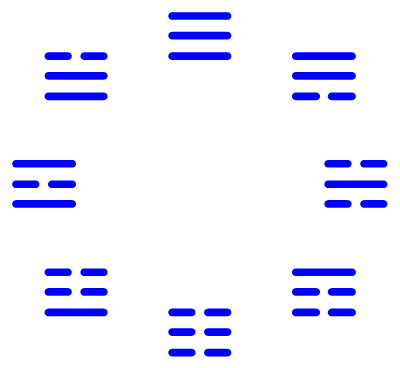
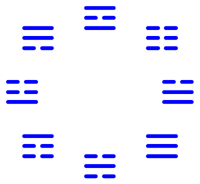
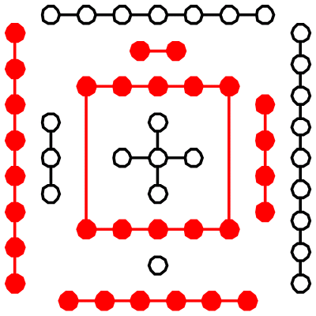
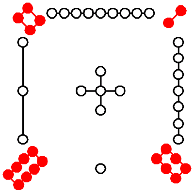
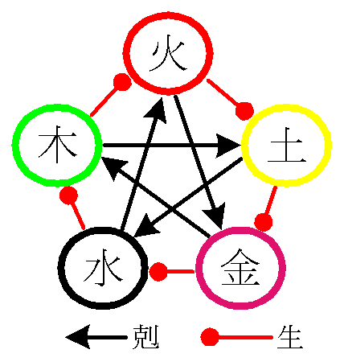
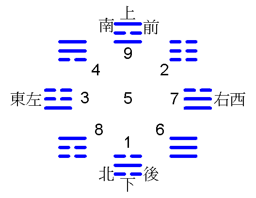
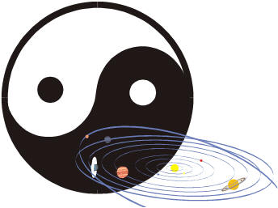

中醫的作用原理──中醫學術角度
1AUHC6wpgF676cEd8uZX6cU8BucGU4KAP7
易經是更高階層的文明，中醫從此衍生而出。同時這也是中醫的原理或理據，亦是宇宙能的使用方法。
先天
後天
河圖
洛書
五行
九宮
太極
此乃中醫專業的學術角度而言（不是科學角度），看不懂不要緊，很多人和你一樣。或用欣賞的心態觀感，畢竟是天書。只可意會不可言傳，恰如其分地體現了這一意境（不包括葉公好龍）。中醫不是沒道理，只是現代人的智慧多難以明白。像八卦如此簡單，順序方位稍微不同就是完全不同的東西，芝麻綠豆湯亦可再簡化，只是現在方便人們接受而已。
宇宙之浩大，生命之渺小（人生 4~30萬日），如果沒有歷史，沒有承繼，多少次文明之後，許多東西已不是我們所能認識。這就是中華傳統文化的可貴之處，國寶的價值和意義（絕對不是人們掛在口邊的那些有形有價之物）。
要開始使用中醫，你並不需要瞭解這些技術細節或原理。當然，如果你想瞭解中醫原理，可以慢慢花幾十年時間研究這些（以為入門）。